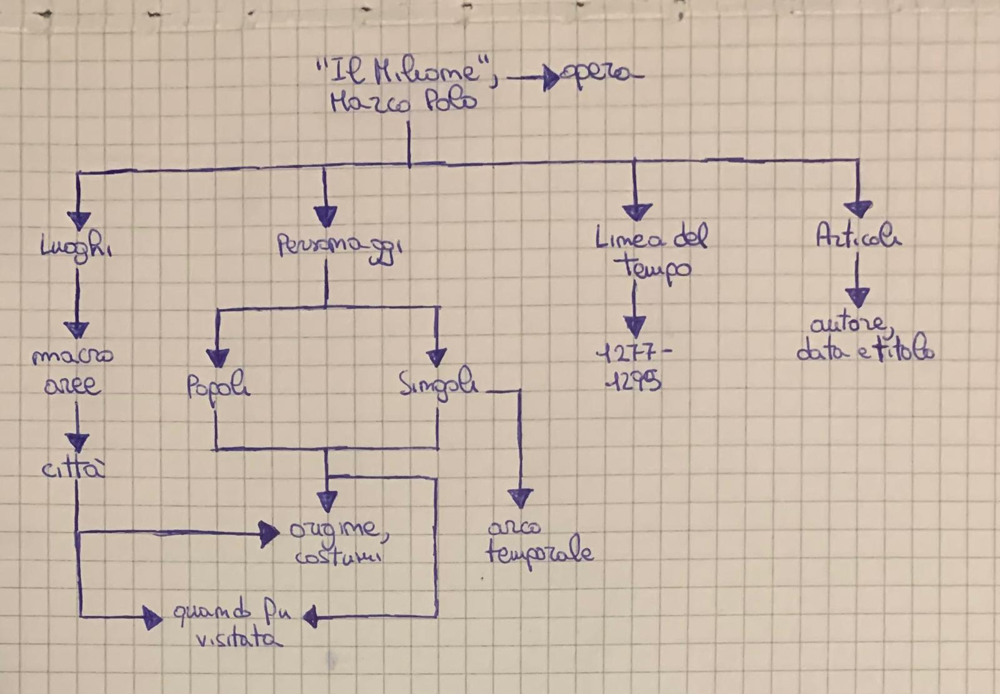
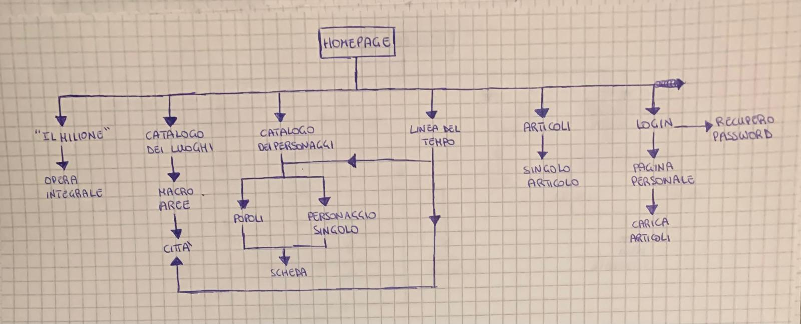

Realizzare un catalogo dei luoghi e dei personaggi presenti e citati nell’opera “Il Milione” di Marco Polo per poter metter in luce l’itinerario della Via della Seta da lui percorso. Oltre a ciò, sarà possibile aggiornarsi nell’ancora vivo dibattito sulla figura di Marco Polo, dell’autenticità della sua opera attraverso la visione di articoli scientifici. Sarà privilegiata una navigazione di tipo spaziale e temporale, ma non precludendo una per temi, soggetti e luoghi. Il progetto guarda soprattutto agli specialisti del tema in questione -Marco Polo e la sua opera-, pur essendo fruibile anche per appassionati del settore o semplici interessati.
Il progetto si occupa di creare una collezione digitale di luoghi e persone citate nell’opera “Il Milione” di Marco Polo. L’obiettivo è poter creare un catalogo inventariato per poter studiare in maniera più semplice la figura e l’opera di Marco Polo per poter ricavare più informazioni possibili -da questa singola opera- sullo stato dei commerci al suo tempo.
Il pubblico principale sono gli specialisti del settore che useranno il sito per approfondire le loro conoscenze e condividere le loro ricerche. Ma è previsto anche un audience secondaria che sono i curiosi o novizi con la voglia di conoscere la materia trattata. L'accesso sarà sia come ospiti sia come utenti registrati, nel caso degli ospiti possono solamente visualizzare il catalogo e i vari item, gli utenti registrati potranno anche condividere le proprie ricerche in forma di articoli scientifici.
Il progetto prevede un accesso profilato che permette di caricare sulla piattaforma contenuti specifici -articoli scientifici- che vanno a confluire nella collezione apposita.
I contenuti sono stati presi principalmente dall’opera “Il Milione” di Marco Polo nell’edizione presente in rete (https://ia903106.us.archive.org/4/items/milioneilmarcopolo/Milione%20%28Il%29%20-%20Marco%20Polo.pdf). Le immagini e alcune informazioni aggiuntive sono state prese da Wikipedia.
Non esistono siti che raccolgono e analizzano i luoghi e le persone citate nell’opera “Il Milione” di Marco Polo. In rete si possono, tuttavia, trovare l’opera integrale e numerosi blog e riviste digitali che trattano il viaggio, la figura e l’opera di Marco Polo. La risorsa da me sviluppata è l’unica che cerca di analizzare singolarmente a fondo i luoghi e i personaggi citati nell’opera. Esistono, tuttavia, siti web che analizzano altre tematiche per così dire affini in maniera esaustiva e da cui ho preso spunto per la realizzazione
In particolar modo, ho consultato https://encyclopedia.1914-1918-online.net/home/, soprattutto per come è organizzata la navigazione del catalogo.
mappa concettuale
gerarchia del sito web
Per quanto riguarda l’architettura del sito, ho deciso di impostare la header fissa in alto in tutte le pagine attraverso la caratteristica “fixed” per poter sempre utilizzare la searchbar, accedere al proprio spazio personale e tornare facilmente alla pagina home con un click sul logo o sul titolo. Oltre a ciò, ho predisposto una offcanvas con funzione di navbar che permette lo scorrimento della pagina e indica in che sezione del sito si trova l’utente. In ogni pagina di secondo livello gerarchico sono presenti le breadcumps per poter agevolare la navigazione nel sito. Infine, alla fine di ogni pagina è presente il footer con crediti e licenze e i profili social.
Tutte le pagine di secondo e terzo livello gerarchico sono pensate con una divisione in sezioni ben specifica. Le pagine catalogo dedicate ai personaggi, i luoghi e gli articoli sono divise in due sezioni principali: filtri di browsing e visualizzazione dei singoli del catalogo. Tutto ciò è funzionale e pensato per poter permettere una navigazione facile e veloce all’utente.
Le pagine item di personaggi e luoghi sono organizzate con una sezione di testo dove viene descritto l’item, una sezione laterale dove vengono riportate immagini relative all’item e una sezione finale in basso che permette di andare a vedere items simili e di possibile interesse per l’utente.
Per quanto riguarda il font ho ho utilizzato Fauna One, i testi sono di colore nero così da risultare costantemente leggibili essendo lo sfondo prevalentemente chiaro. Unico caso che si discosta da questa norma è il colore usato per il carousel presente nella pagina home dove il testo ha colore bianco in modo da risaltare.
I colori scelti sono il beige, il bianco e il giallo colori che tra loro si abbinano bene e le gradazioni sono state scelte tramite uno strumento online: https://www.toptal.com/designers/colourcode così da ottenre il massimo del contrasto e dell'effetto su schermo.
Per quanto riguarda le icone ho scelto di utilizzare icone da Font Awesome, in questa maniera possono essere visualizzate su ogni tipo di browser e sono rese tutte cliccabili così da migliorare ampiamente la comunicazione verso l'utente.
Tra i sistemi di browsing c’è la possibilità di filtrare nei vari cataloghi attraverso canali pertinenti come ordine alfabetico, di carattere più generale, o macroaree per quanto riguarda esclusivamente i luoghi. La linea del tempo permette anche di filtrare luoghi e personaggi attraverso appunto una scansione di tipo temporale. Infine, si è privilegiata una scansione topica attraverso l’implementazione di una mappa direttamente nella home del sito.
Inoltre, il sito si avvale come strumenti e utilities per l'interazione:
Tutte le informazioni sono state prese dall’opera “Il Milione” di Marco Polo nella versione scaricabile online (https://ia903106.us.archive.org/4/items/milioneilmarcopolo/Milione%20%28Il%29%20-%20Marco%20Polo.pdf). Tali informazioni sono state corroborate anche da diverse pagine Wikipedia e in particolare da https://it.wikisource.org/wiki/Pagina:Storia_della_geografia_(Luigi_Hugues)_-_2.djvu/113, oltre che da riviste e blog online di rilievo come Storica di National Geographic.